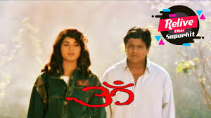
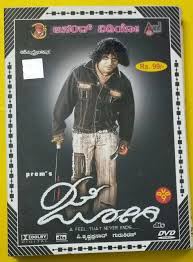
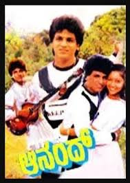
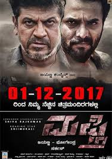

Shiva Rajkumar (born Nagaraju Shiva Puttaswamy; 12 July 1962)is an Indian actor, film producer and television presenter who predominantly works in Kannada cinema. In a career spanning over three decades, he has worked in over 125 films in Kannada and has received several awards, including four Karnataka State Film Awards, four Filmfare Awards South and six South Indian International Movie Awards. Shiva Rajkumar is the eldest son of matinee idol Dr. Rajkumar. He is also fondly known as Shivanna by his fans. He made his onscreen debut with Sri Srinivasa Kalyana (1974) as a child artiste. After graduating with a Bachelor of Science in Chemistry.
|  | ||
|  | ||
|  | ||
|  |